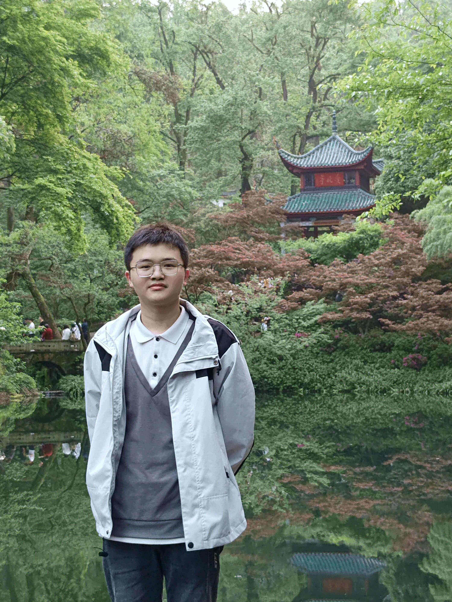

Yuanlin Chen

I am Yuanlin Chen, a first-year Ph.D. student at Beihang University, School of Mathematical Science, supervised by Prof. Xiaoxian Tang. I hold a Master's degree from the Sichuan University of Science and Engineering, College of Mathematics and Statistics, supervised by Prof. Tianxiu Lu (ORCID: 0000-0002-8806-9656). My research interests include computational algebraic geometry, mathematical biology, and chaotic system analysis.
Papers:
- Yuanlin Chen, TianXiu Lu*, Guanrong Chen. Thumbnail-preserving encryption based on binary–decimal hybrid and a generalized coupled logistic map. International Journal of Bifurcation and Chaos, 2024, 34(15): 2450193. DOI: 10.1142/S0218127424501931
- Yuanlin Chen, TianXiu Lu*, QianXue Wang. The chaotic properties and circuit design of a generalized high-dimensional integer-domain system. Chaos, Solitons & Fractals, 2024, 181: 114610. DOI: 10.1016/j.chaos.2024.114610
- Yuanlin Chen, TianXiu Lu*, Caiwen Chen, et al. A novel image encryption method based on improved two-dimensional logistic mapping and DNA computing. Frontiers in Physics, 2024, 12: 1469418. DOI: 10.3389/fphy.2024.1469418
Talks:
- 2024. 08 East China Normal University Graduate Summer School on "Frontier Issues in Differential Dynamical Systems".
- 2024. 06 Conference on Dynamical Systems and Partial Differential Equations.
- 2024. 04 The 7th Annual Academic Conference on Chaos and Nonlinear Circuits of the Circuit and Systems Society of the Chinese Institute of Electronics.
- 2023. 10 The 33rd Annual Academic Conference of the Circuit and Systems Society of the Chinese Institute of Electronics.